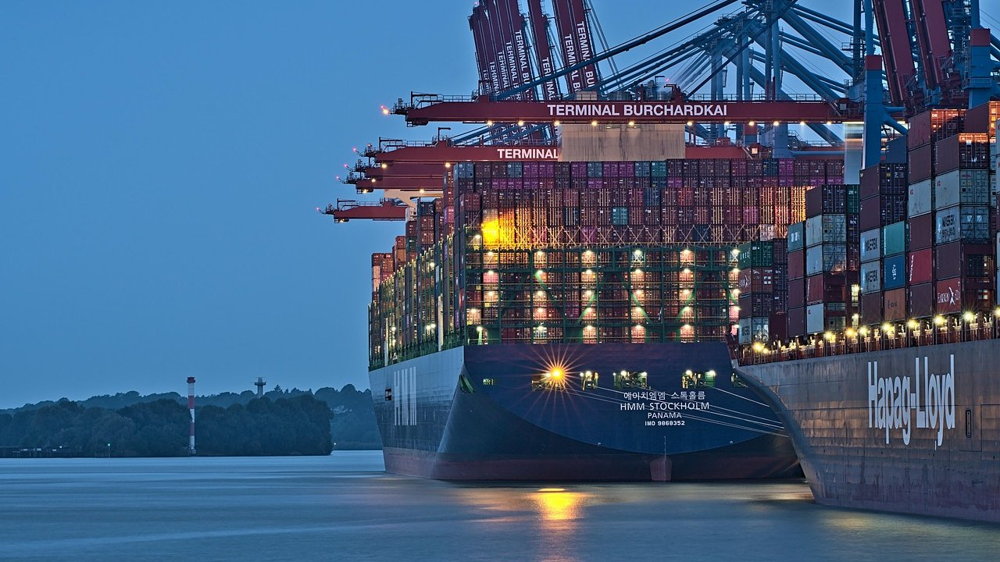

TSMC 3나노 램프업, 역사적 맥락서 다시 읽다

TSMC의 3나노(N3) 공정이 2026년 3분기 기준 전체 웨이퍼 매출에서 가장 큰 비중을 차지하는 선두 노드로 올라섰다. 시장조사기관 EE타임스는 최근 보고서에서 이 사실을 확인하면서도 '단순한 성과 발표' 이상의 맥락이 필요하다고 경고했다.
역사적 비교가 핵심이다. TSMC가 7나노(N7)를 양산하기 시작한 2018~2020년 구간과 현재 3나노 램프업 곡선을 겹쳐 보면, 7나노가 매출 선두에 오르기까지 걸린 기간이 3나노보다 눈에 띄게 짧았다. EE타임스 분석에 따르면 7나노는 양산 개시 후 약 6분기 만에 전체 매출 1위를 달성했으나, 3나노는 동일 지점 도달에 약 8분기가 소요됐다.
속도 차이의 원인으로는 설계 복잡성 상승과 EUV 노광 공정 확대가 꼽힌다. 3나노는 핀펫(FinFET) 구조의 물리적 한계에 근접해 있어 수율(양품 비율) 안정화에 더 많은 시간이 필요하다. 팹 내부 소식에 정통한 업계 관계자는
N3E(강화판 3나노)로 전환하면서 수율이 상당히 개선됐지만, 초기 N3 세대는 고객 기대치를 충족하는 데 어려움을 겪었다"고 전했다.",
고객 구성도 달라졌다. 7나노 시절엔 애플 A시리즈와 화웨이 기린 칩이 초기 물량을 대부분 소화했지만, 3나노에서는 애플 외에 엔비디아·AMD·퀄컴 등 다수 팹리스가 생산 물량을 나눠 가져가고 있다. 수요처 다변화는 공급망 안정성을 높이지만, 각 고객사의 테이프아웃(설계 완료 후 생산 의뢰) 일정 분산으로 인해 단기 가동률 변동성이 커지는 부작용도 낳는다.
국내 소재·장비 기업에 미치는 파급은 직접적이다. 3나노 공정에 투입되는 포토레지스트(감광제), 슬러리(연마재), 블랭크 마스크 등 첨단 소재 수요는 7나노 대비 단위 면적당 20~30% 증가한 것으로 업계는 추정한다. 동진쎄미켐·솔브레인·SK머티리얼즈 등 핵심 소재 공급사들이 수혜를 받고 있는 이유다.
2나노(N2) 전환 일정이 더욱 주목된다. TSMC는 2025년 하반기 N2 위험 생산(Risk Production)을 시작해 2026년 본격 양산에 들어갔다. N2는 기존 핀펫 대신 게이트올어라운드(GAA) 트랜지스터를 채택해 공정 난이도가 한 단계 더 올라간다. EE타임스는 N2의 램프업 속도가 N3보다 더 느릴 수 있다고 경고했다.
반도체 장비 시장에도 변화 신호가 감지된다. 어플라이드 머티리얼즈, 램 리서치, 도쿄일렉트론(TEL) 등 글로벌 장비 3사는 GAA 전환에 맞춰 원자층 증착(ALD)·식각 장비 라인업을 대폭 강화하고 있다. 국내 피에스케이홀딩스·원익IPS 등도 GAA 공정용 장비 인증 작업을 병행 중이다.
공급망 관점에서 또 다른 변수는 CoWoS(칩 온 웨이퍼 온 서브스트레이트) 패키징 병목이다. AI 가속기 수요 폭증으로 CoWoS 용량이 웨이퍼 생산 속도를 따라가지 못하면서, 실질적인 출하 제약 요인이 전공정(웨이퍼 제조)이 아닌 후공정(패키징)으로 이동했다는 분석도 나온다.
시장조사업체 트렌드포스는 2026년 TSMC의 3나노 계열(N3/N3E/N3P) 웨이퍼 출하량을 약 650만 장(300mm 환산)으로 추산한다. 이는 전년 대비 약 35% 증가한 수치다. 같은 기간 2나노 생산 비중은 아직 5% 미만으로, N3 중심 구도는 당분간 유지될 전망이다.
전문가들은 2나노 전환 속도가 향후 2년간 TSMC 주가와 공급망 전반의 핵심 변수가 될 것이라고 입을 모은다. 하나증권 반도체 담당 애널리스트는
N2 수율이 N3 수준으로 안정화되는 시점이 2027년 하반기라면, 관련 소재·장비 수요의 정점도 그 시기에 몰릴 것"이라고 전망했다.",
투자 시사점으로는 단기 N3 수혜주보다 N2·GAA 전환 수혜 종목에 관심을 가져야 한다는 조언이 많다. GAA 공정 도입으로 새롭게 부상하는 소재 카테고리로는 고유전율(High-K) 게이트 절연막, 금속 게이트 소재, 내식성 강화 식각 마스크 등이 꼽힌다.